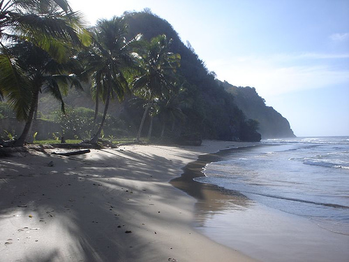
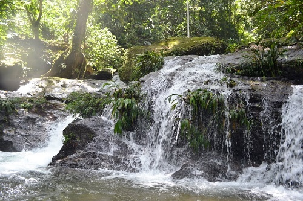
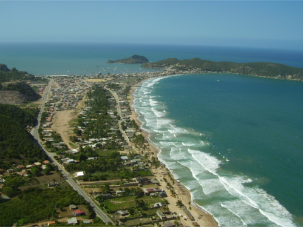
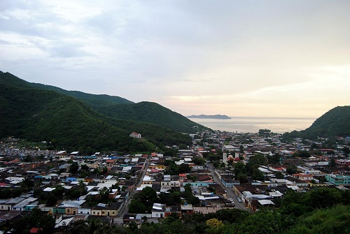
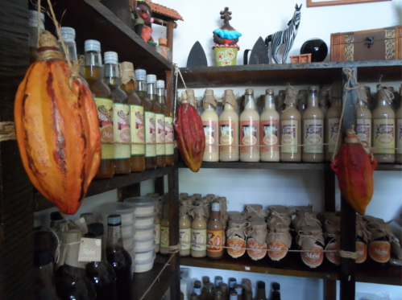
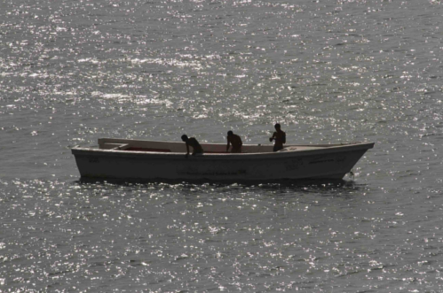
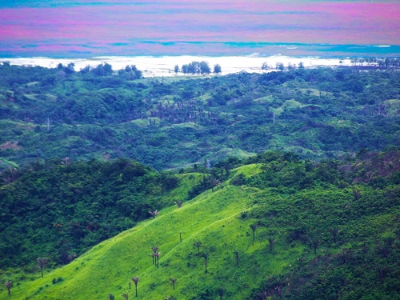
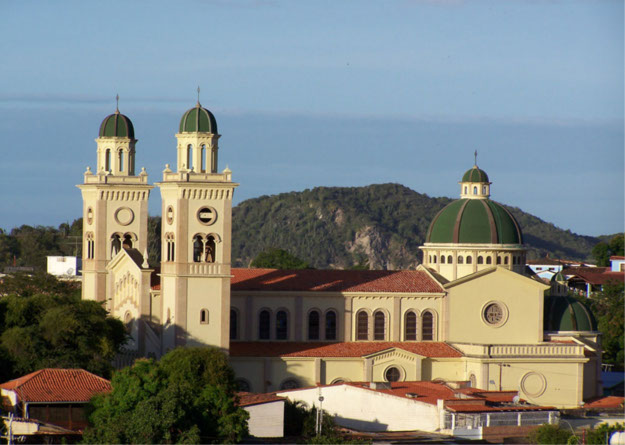

Nestled between the waters of the Caribbean and the gulf of the same name, the Paria peninsula is a region of the Sucre state, located in the northwest of Venezuela, being commonly portrayed by outsiders as an unknown paradise even by its own inhabitants.
fascinating
With an area of 2438 km² and just over 700 km2 of coastline, the region has an exquisite and varied geography, full of paradisiacal beaches and magical spas built around hundreds of thermal springs scattered throughout the north and east of the peninsula, while to the south the waters of the Gulf of Paria bathe the savannas of Venturini, surrounded by the heights and its exuberant greenery. These landscapes are home to an incredible diversity of plants and animals, many unique to the region.
rich
Under the tropical climate grows one of the most valued Venezuelan fruits internationally: paria cocoa, known for its strong aroma and acid flavors, is only one of the consequences of the fusion of thousands of stories from different cultures of the globe, who ended up in this small territory and make it big.
stunning
Gallery







